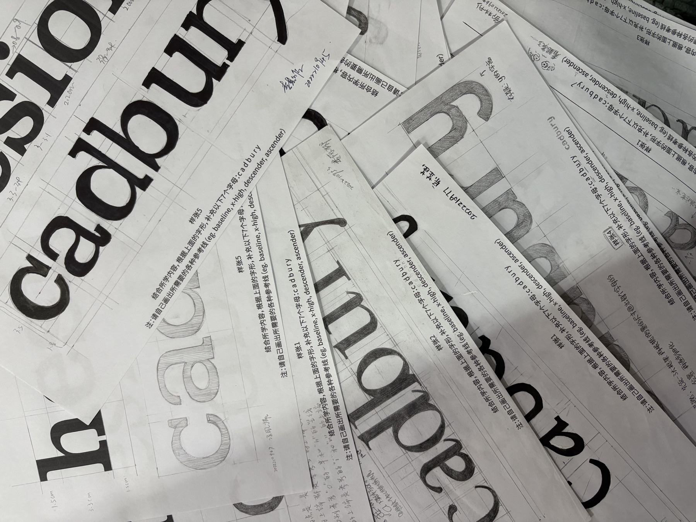
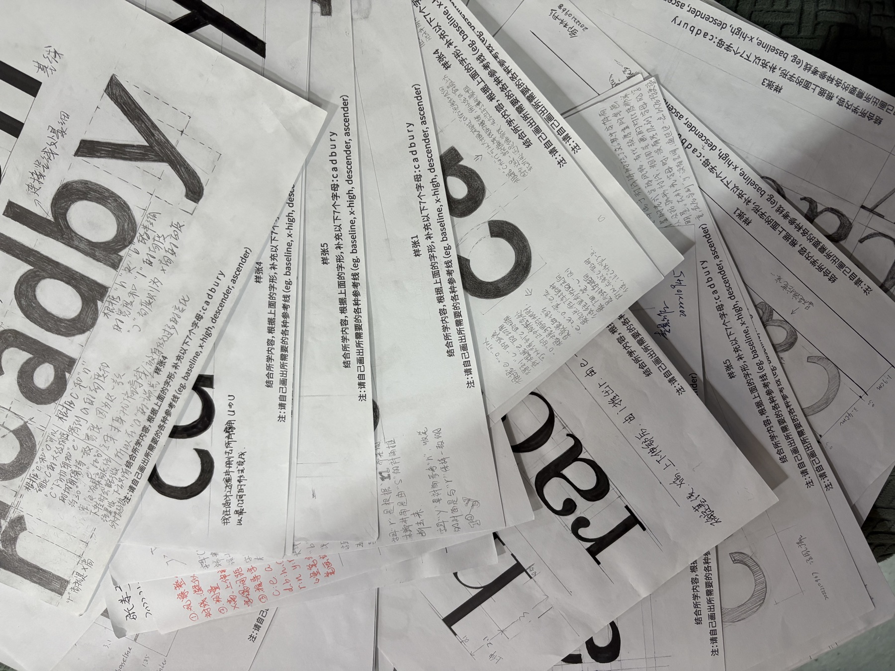

Course课程
Chinese-Latin Cross-script Design and Application中西文交叉设计与运用
Course on multilingual typography, cross-script composition, and applied type design.多语言排版、跨文字组合与应用型字体设计课程。



Course课程
Course on multilingual typography, cross-script composition, and applied type design.多语言排版、跨文字组合与应用型字体设计课程。

